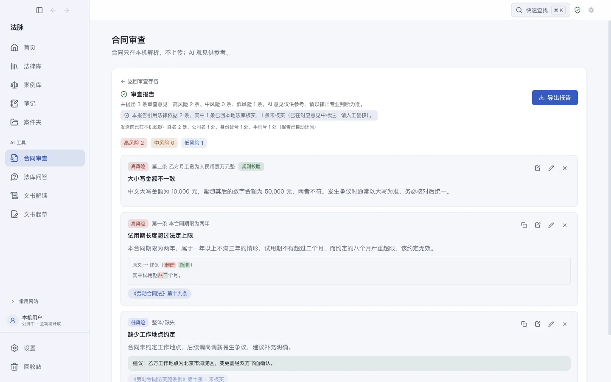

AI 适合做合同初审的筛查层：找风险条款、查缺漏、列出要核实的事实。它不适合替你做判断，风险等级、商业取舍、要不要让步，这些仍然是你的工作。把这条边界定清楚，下面的流程才成立。
第一步：喂材料之前，先处理当事人信息
用在线 AI 服务时，默认你发出去的内容对方会留存。把合同交给 AI 之前做两件事：
- 当事人名称、法定代表人、联系方式替换成代号（甲公司、乙公司、张某）；
- 涉及商业秘密的条款（配方、客户名单、定价结构）整段摘除，这部分在审查意见里单独处理。
金额、日期、违约金比例这类审查要用的事实保留原样，替换它们会让 AI 的意见失真。替换完自己通读一遍：代号要前后一致，「甲公司」到第三条变成「A 公司」，AI 会当成两个主体。
第二步：提示词给足三样东西
合同审查的提示词不需要花哨，但三样东西缺一不可：你代表哪一方（同一条款对甲乙双方的风险是反的）、审什么（初审找风险，还是只查某类条款）、按什么格式输出（格式定了，第三步的核查才有固定入口）。
一个可以直接改的模板：
你是合同审查律师，委托方是本合同的〔甲方／乙方〕。
审查下面这份〔买卖／租赁／服务〕合同，按以下格式输出：
一、风险条款：逐条引用原文，说明对委托方的具体风险，给出修改建议。
二、缺漏条款：对照这类合同通常应有的条款，列出本合同没有的。
三、法律依据：每条意见注明法律名称和条文序号；不确定现行条文的，直接写「不确定」。
只引用现行有效的法律。不要概括合同内容，直接进入审查意见。最后两句是实际用出来的经验：不写「不确定可以直说」，AI 会把拿不准的条号编成确定的；不写「不要概括」，它会先用三百字复述一遍合同。
第三步：逐条核查 AI 给的法律依据
这是最容易被省掉、也最不能省的一步。AI 给的每条法条引用要核三件事：这部法是不是现行文本、条文序号对不对、条文内容是否真的支持这条意见。为什么 AI 会把条号编得很像真的、三步核查具体怎么做，见另一篇：AI 给的法条引用怎么核实。

初审阶段有个省力的办法：要求 AI 按「法律名称＋条文序号」的格式输出依据（上面的模板已包含这条），核查时按图索骥，比从一段话里扒引用快得多。
第四步：AI 的输出是底稿，不是成稿
把核查过的风险点誊进你自己的审查意见，用你的话重写结论。两个理由：AI 的措辞拿不准分寸，「建议删除」和「建议与对方协商调整」在谈判里是两种信号；审查意见是你署名的职业判断，内容必须全部过你的手。
两个常见的坑
- 长合同整份喂。超出上下文长度时，多数 AI 会静默忽略后半部分，而不是告诉你读不完。超过二十页的合同按章节分段审，最后让它汇总。
- 让 AI 直接改出定稿。改动不可追溯，你不知道它在你要求之外还动了什么。让它输出「原文＋修改建议」的对照，改动由你落笔。